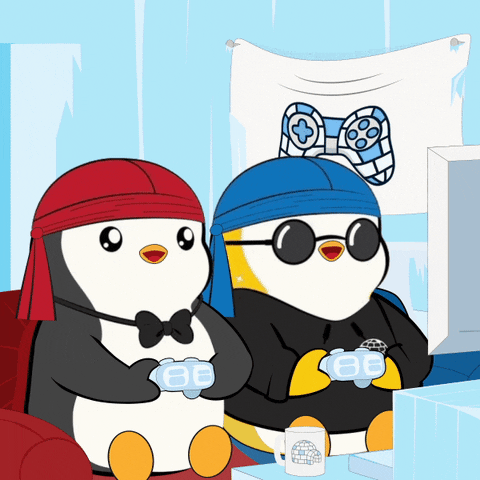

Hello, I'm Turpin 👊🏾

I love esport, Digital Marketing, Web-development and Zouk. I am a student at Kedge Business School in Digital Marketing and Sales
Esport🎮
I'm passionate about esport
Esports is live competitive video gaming. As with traditional sports, professional players compete in tournaments and championships, watched by millions of people worldwide, with huge prize money at stake. There are also non-professional players, including scholastic esports players, who spend a significant amount of time practicing and playing. In fact, across the US, 175 universities and colleges are members of the National Association of Collegiate Esports (NACE)1 and offer varsity esports programs. Global interest in esports is likely to be fueled by its debut at the Commonwealth Games 20222 and Asian Games 20223, and its potential inclusion in the 2028 Olympic Games4. Read our article to find out more about the future of esports. Download our Esports 101: What Professionals Need to Know.
Digital💻
I'm passionate about Digital Marketing
f you’re passionate about marketing, you probably spend at least some time researching different strategies and technologies to see how they can be used to improve your business and help it grow. You may read published content like blogs or online articles to supplement training in new technology or methods, or you may even write own content with the goal of publishing it on a website or as an article written for a magazine or newspaper. Whether you’re reading stories that have already been written or are working on original pieces, there is no better way to learn about what sells readers and how they think than by going to the source. Your enthusiasm will make you more enthusiastic about your work, which is one of the first things people notice when they interview or hire someone.
Zouk🕺🏾

I'm passionate about zouk
One of the reasons why I am drawn to Zouk is the feeling of connection it creates between partners. The dance is characterized by close physical contact, making it a highly intimate and romantic experience. It creates a sense of trust and understanding, allowing dancers to let go and fully immerse themselves in the music and the moment.